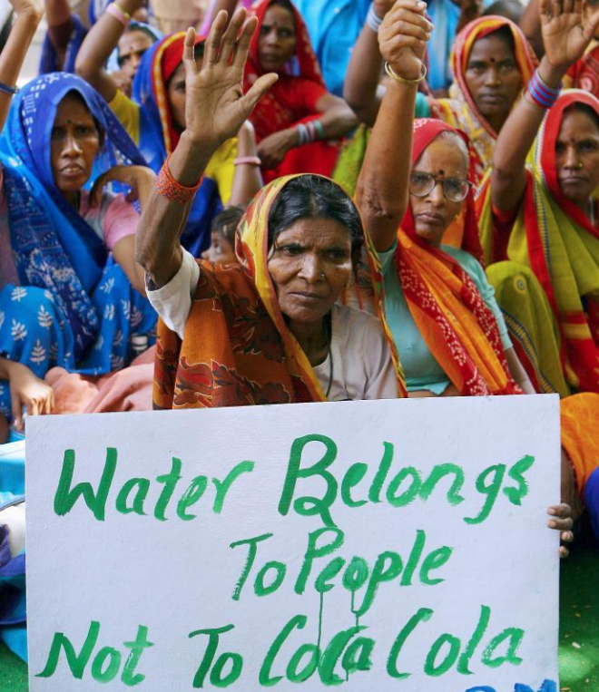

Una joven francesa apura los últimos tragos de su Coca-Cola sentada en una de las azoteas que permiten a los turistas disfrutar de los atardeceres con vistas al Ganges. Al preguntarle, reconoce no saber que a pocos kilómetros de esta ciudad, Benarés, los agricultores están en pie de guerra contra esa multinacional por la explotación del agua. El camarero indio también lo desconoce. Lo cierto es que en India muchas plantas embotelladoras de esta marca cuentan con la firme oposición de las comunidades locales. El último golpe a la compañía estadounidense se ha dado en este distrito del estado de Uttar Pradesh, donde 18 aldeas exigen a la Junta de Control de la Contaminación que prohíba a la fábrica extraer más este recurso en un área "con escasez de agua".
"Coca-Cola utiliza la misma agua subterránea que la comunidad usa para beber, cocinar, lavar, regar y alimentar al ganado", afirma a DE BOCA EN BOCA Amit Srivastava, coordinador del Centro de Recursos de India (IRC). El activista ofrece una buena imagen de las consecuencias que sufren en su día a día: "Muchos pozos se han secado, así que las mujeres tienen que caminar más para conseguir agua potable. Los niveles de agua subterránea han bajado tanto que los agricultores tienen que cavar pozos más profundos para obtener agua para el riego. Pero eso cuesta un dinero que muchos no tienen, por lo que pierden ingresos ya que la producción baja al regar menos y al alimentar peor a las vacas".
El dirigente de IRC, organización que apoya a los campesinos, señala que los niveles de agua "comenzaron a bajar rápidamente" cuando se instaló la planta en 1999. Actualmente este recurso se encuentra "sobreexplotado", la peor de las cuatro categorías establecidas por la Autoridad Central de Aguas Subterráneas.
Hindustan Coca-Cola Beverages Pvt Ltd, filial local del mayor fabricante de refrescos del mundo, rechaza las acusaciones y alude a un estudio de 2012 en el que las autoridades observaron que el agotamiento del agua no se debía a la extracción de su planta. En un comunicado afirmó que hay agua suficiente, si bien reconocía el descenso de los niveles.